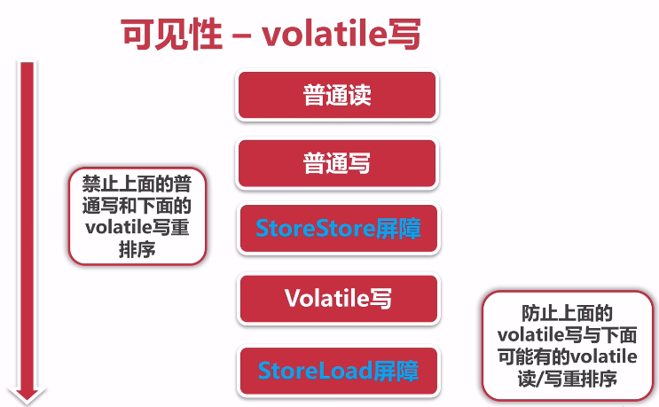
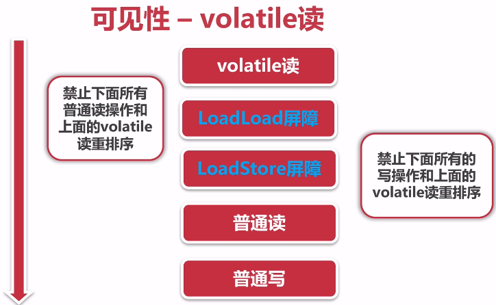

JAVA并发编程与高并发解决方案 - 并发编程 二
版本
作者
内容
2018.4.8
huangz
线程安全性、安全发布对象
线程安全性 当多个线程访问某个类时，不管运行时环境采用何种调度方式 或者这些进程将如何交替执行，并且在主调代码中不需要任何额外的同步或协调 ，这个类都能表现出正确的行为 ，那么就称这个类是线程安全的。
线程安全性主要体现：
原子性：提供了互斥访问，同一时刻只能有一个线程来对它进行操作
可见性：一个线程对主内存的修改可以及时的被其他线程观察到
有序性：一个线程观察其他线程中的指令执行顺序，由于指令重排序的存在，该观察结果一般是杂乱无序
原子性 Atomic包 位于java.util.concurrent.atomic
AtomicXXX : CAS、Unsafe.compareAndSwapXXX
CAS（Compare and swap）比较和替换是设计并发算法时用到的一种技术。简单来说，比较和替换是使用一个期望值和一个变量的当前值进行比较，如果当前变量的值与我们期望的值相等，就使用一个新值替换当前变量的值。
AtomicInteger 1 2 3 4 5 6 7 8 9 10 11 12 13 14 15 16 17 18 19 20 21 22 23 24 25 26 27 28 29 30 31 32 33 34 35 36 37 38 39 @Slf 4j@ThreadSafe public class CountExample2 public static int clientTotal = 5000 ; public static int threadTotal = 200 ; public static AtomicInteger count = new AtomicInteger(0 ); public static void main (String[] args) throws Exception ExecutorService executorService = Executors.newCachedThreadPool(); final Semaphore semaphore = new Semaphore(threadTotal); final CountDownLatch countDownLatch = new CountDownLatch(clientTotal); for (int i = 0 ; i < clientTotal ; i++) { executorService.execute(() -> { try { semaphore.acquire(); add(); semaphore.release(); } catch (Exception e) { log.error("exception" , e); } countDownLatch.countDown(); }); } countDownLatch.await(); executorService.shutdown(); log.info("count:{}" , count.get()); } private static void add () count.incrementAndGet(); } }
线程安全？源码分析
AtomicInteger.java
1 2 3 4 5 6 7 8 9 10 11 12 13 14 15 16 17 private static final long serialVersionUID = 6214790243416807050L ;private static final Unsafe unsafe = Unsafe.getUnsafe(); private static final long valueOffset;static { try { valueOffset = unsafe.objectFieldOffset (AtomicInteger.class.getDeclaredField("value" )); } catch (Exception ex) { throw new Error(ex); } } private volatile int value;public final int incrementAndGet () return unsafe.getAndAddInt(this , valueOffset, 1 ) + 1 ; }
Unsafe.java
1 2 3 4 5 6 7 8 9 10 11 12 13 14 15 16 17 18 19 20 21 22 23 24 public final native boolean compareAndSwapInt (Object var1, long var2, int var4, int var5) public final int getAndAddInt (Object var1, long var2, int var4) int var5; do { var5 = this .getIntVolatile(var1, var2); } while (!this .compareAndSwapInt(var1, var2, var5, var5 + var4)); return var5; }
AtomicInLong 与 LongAdder 1 2 3 4 5 6 7 8 9 10 11 12 13 14 15 16 17 18 19 20 21 22 23 24 25 26 27 28 29 30 31 32 33 34 35 36 37 38 @Slf 4j@ThreadSafe public class AtomicExample2 public static int clientTotal = 5000 ; public static int threadTotal = 200 ; public static AtomicLong count = new AtomicLong(0 ); public static void main (String[] args) throws Exception ExecutorService executorService = Executors.newCachedThreadPool(); final Semaphore semaphore = new Semaphore(threadTotal); final CountDownLatch countDownLatch = new CountDownLatch(clientTotal); for (int i = 0 ; i < clientTotal ; i++) { executorService.execute(() -> { try { semaphore.acquire(); add(); semaphore.release(); } catch (Exception e) { log.error("exception" , e); } countDownLatch.countDown(); }); } countDownLatch.await(); executorService.shutdown(); log.info("count:{}" , count.get()); } private static void add () count.incrementAndGet(); } }
1 2 3 4 5 6 7 8 9 10 11 12 13 14 15 16 17 18 19 20 21 22 23 24 25 26 27 28 29 30 31 32 33 34 35 36 37 @Slf 4j@ThreadSafe public class AtomicExample3 public static int clientTotal = 5000 ; public static int threadTotal = 200 ; public static LongAdder count = new LongAdder(); public static void main (String[] args) throws Exception ExecutorService executorService = Executors.newCachedThreadPool(); final Semaphore semaphore = new Semaphore(threadTotal); final CountDownLatch countDownLatch = new CountDownLatch(clientTotal); for (int i = 0 ; i < clientTotal ; i++) { executorService.execute(() -> { try { semaphore.acquire(); add(); semaphore.release(); } catch (Exception e) { log.error("exception" , e); } countDownLatch.countDown(); }); } countDownLatch.await(); executorService.shutdown(); log.info("count:{}" , count); } private static void add () count.increment(); } }
AtomicInLong 与 LongAdder 比较
就像我们所知道的那样,AtomicLong的原理是依靠底层的cas来保障原子性的更新数据，在要添加或者减少的时候，会使用死循环不断地cas到特定的值，从而达到更新数据的目的。如果竞争不激烈，修改成功几率很高，否则失败概率很高，在失败几率很高的情况下，这些原子操作就会进行多次的循环操作尝试，因此性能会受到影响。
对于普通类型的Long和Doubble变量，JVM允许将64位的读操作或写操作拆成两个三十二位的操作。
LongAdder的核心是将热点数据分离，比如说它可以将AtomicLong内部核心数据value分离成一个数组，每个线程访问时，通过hash等算法，映射到其中一个数字进行计数，最终的计数结果则会这个数据的求和累加，其中热点数据value会被分离成多个cell，每个cell独自维护内部的值，当前对象实际值为所有cell累计合成，这样的话，热点就进行了有效的分离，并提高了并行度。
LongAdder在AtomicLong的基础上将单点的更新压力分散到各个节点，在低并发的时候通过对base的直接更新可以很好的保障和AtomicLong的性能基本保持一致，而在高并发的时候通过分散提高了性能。
缺点是LongAdder在统计的时候如果有并发更新，可能导致统计的数据有误差。
实际使用中，在处理高并发时，可以优先使用LongAdder，而不是继续使用AtomicLong，当然，在线程竞争很低的情况下，使用AtomicLong更简单更实际一些，并且效率会高些。其他情况下，比如序列号生成，这种情况下需要准确的数值，全局唯一的AtomicLong才是正确的选择，而不是LongAdder
> 参考文章 [AtomicLong和LongAdder的区别](https://blog.csdn.net/yao123long/article/details/63683991)
AtomicReference
The AtomicReference class provides reference objects that may be read and written atomically, so when multiple threads try to reach them at the same time, only one will be able to do so
原子性引用
1 2 3 4 5 6 7 8 9 10 11 12 13 14 15 @Slf 4j@ThreadSafe public class AtomicExample4 private static AtomicReference<Integer> count = new AtomicReference<>(0 ); public static void main (String[] args) count.compareAndSet(0 , 2 ); count.compareAndSet(0 , 1 ); count.compareAndSet(1 , 3 ); count.compareAndSet(2 , 4 ); count.compareAndSet(3 , 5 ); log.info("count:{}" , count.get()); } }
以上实例比较简单，我有个疑问？假如我们引用的是一个自定义的对象，并且对象里面有属性值，然后，修改对象中的属性值也是原子性的吗？还是只是对对象的引用是原子性操作。
带着上面的疑问，进行源码分析
1 2 3 4 5 6 7 8 9 10 11 12 13 14 15 16 17 18 19 20 21 22 23 24 25 26 27 28 29 30 31 32 33 34 35 36 37 38 39 40 41 42 43 44 45 46 47 48 49 50 51 52 53 54 55 56 57 58 59 60 61 62 63 public class AtomicReference <V > implements java .io .Serializable private static final long serialVersionUID = -1848883965231344442L ; private static final Unsafe unsafe = Unsafe.getUnsafe(); private static final long valueOffset; static { try { valueOffset = unsafe.objectFieldOffset (AtomicReference.class.getDeclaredField("value" )); } catch (Exception ex) { throw new Error(ex); } } private volatile V value; public AtomicReference (V initialValue) value = initialValue; } public AtomicReference () } public final V get () return value; } public final void set (V newValue) value = newValue; } public final boolean compareAndSet (V expect, V update) return unsafe.compareAndSwapObject(this , valueOffset, expect, update); } @SuppressWarnings ("unchecked" ) public final V getAndSet (V newValue) return (V)unsafe.getAndSetObject(this , valueOffset, newValue); } }
通过源码分析，可以得出
AtomicReference 所提供的某些方法可以进行原子性操作，如compareAndSet、getAndSet，这仅仅是对引用进行原子性操作
AtomicReference 不能保证对象中若存在属性值修改是线程安全的，如假设引用对象是person，修改person中name和age，多个线程同时从引用中获得对象，并进行修改，会出现线程不安全情况。下面我们通过代码来验证一下这条结论。
1 2 3 4 5 6 7 8 9 10 11 12 13 14 15 16 17 18 19 20 21 22 23 24 25 26 27 28 29 30 31 32 33 34 35 36 37 38 39 40 41 42 43 44 @Slf 4j@NotThreadSafe public class AtomicReferenceTest public static int clientTotal = 1000 ; public static int threadTotal = 500 ; public static Person person = new Person(0 ,0 ); public static AtomicReference<Person> personAtomicReference = new AtomicReference(person); public static void main (String[] args) throws Exception ExecutorService executorService = Executors.newCachedThreadPool(); final Semaphore semaphore = new Semaphore(threadTotal); final CountDownLatch countDownLatch = new CountDownLatch(clientTotal); for (int i = 0 ; i < clientTotal ; i++) { final int result = i; executorService.execute(() -> { try { semaphore.acquire(); modify(result); semaphore.release(); } catch (Exception e) { log.error("exception" , e); } countDownLatch.countDown(); }); } countDownLatch.await(); executorService.shutdown(); log.info("name:{},age:{}" ,personAtomicReference.get().getName(), personAtomicReference.get().getAge()); } private static void modify (int i) personAtomicReference.get().setAge(personAtomicReference.get().getAge() + i); personAtomicReference.get().setName(personAtomicReference.get().getName() + i); } }
在低并发的情况下，输出的结果是正确的，但是在高并发的情况下结果差距就很大了
1 18:09:52.473 [main] INFO com.mmall.concurrency.example.atomic.AtomicReferenceTest - name:496592,age:496922
AtomicReferenceFieldUpdater atomic包中提供AtomicReferenceFieldUpdater、AtomicIntegerFieldUpdater、AtomicLongFieldUpdater，原子性的更新某一个类实例的指定的某一个字段
AtomicIntegerFieldUpdater
1 2 3 4 5 6 7 8 9 10 11 12 13 14 15 16 17 18 19 20 21 22 23 24 25 26 27 @Slf 4j@ThreadSafe public class AtomicExample5 private static AtomicIntegerFieldUpdater<AtomicExample5> updater = AtomicIntegerFieldUpdater.newUpdater(AtomicExample5.class, "count" ); @Getter public volatile int count = 100 ; public static void main (String[] args) AtomicExample5 example5 = new AtomicExample5(); if (updater.compareAndSet(example5, 100 , 120 )) { log.info("update success 1, {}" , example5.getCount()); } if (updater.compareAndSet(example5, 100 , 120 )) { log.info("update success 2, {}" , example5.getCount()); } else { log.info("update failed, {}" , example5.getCount()); } } }
结果输出
1 2 18:48:27.815 [main] INFO com.mmall.concurrency.example.atomic.AtomicExample5 - update success 1, 120 18:48:27.825 [main] INFO com.mmall.concurrency.example.atomic.AtomicExample5 - update failed, 120
源码分析
1 2 3 4 5 6 7 8 9 10 11 12 13 14 15 16 17 18 19 20 21 22 23 24 25 26 27 28 29 30 31 32 33 34 35 36 37 38 39 40 41 42 43 44 45 46 47 48 49 50 51 52 53 54 55 56 57 58 59 60 61 62 63 64 65 66 67 68 69 70 71 72 73 74 75 76 public abstract class AtomicIntegerFieldUpdater <T > @CallerSensitive public static <U> AtomicIntegerFieldUpdater<U> newUpdater (Class<U> tclass, String fieldName) return new AtomicIntegerFieldUpdaterImpl<U> (tclass, fieldName, Reflection.getCallerClass()); } public int getAndSet (T obj, int newValue) int prev; do { prev = get(obj); } while (!compareAndSet(obj, prev, newValue)); return prev; } private static class AtomicIntegerFieldUpdaterImpl <T > extends AtomicIntegerFieldUpdater <T > { private static final Unsafe unsafe = Unsafe.getUnsafe(); private final long offset; private final Class<T> tclass; private final Class<?> cclass; AtomicIntegerFieldUpdaterImpl(final Class<T> tclass, final String fieldName, final Class<?> caller) { final Field field; final int modifiers; try { field = AccessController.doPrivileged( new PrivilegedExceptionAction<Field>() { public Field run () throws NoSuchFieldException return tclass.getDeclaredField(fieldName); } }); modifiers = field.getModifiers(); sun.reflect.misc.ReflectUtil.ensureMemberAccess( caller, tclass, null , modifiers); ClassLoader cl = tclass.getClassLoader(); ClassLoader ccl = caller.getClassLoader(); if ((ccl != null ) && (ccl != cl) && ((cl == null ) || !isAncestor(cl, ccl))) { sun.reflect.misc.ReflectUtil.checkPackageAccess(tclass); } } catch (PrivilegedActionException pae) { throw new RuntimeException(pae.getException()); } catch (Exception ex) { throw new RuntimeException(ex); } Class<?> fieldt = field.getType(); if (fieldt != int .class) throw new IllegalArgumentException("Must be integer type" ); if (!Modifier.isVolatile(modifiers)) throw new IllegalArgumentException("Must be volatile type" ); this .cclass = (Modifier.isProtected(modifiers) && caller != tclass) ? caller : null ; this .tclass = tclass; offset = unsafe.objectFieldOffset(field); } } }
从源码分析中，可以看出没有要求不能被private修饰
AtomicStampReference 此类是要核心解决CAS的ABA问题
ABA问题：指CAS操作的时候，线程将某个变量值由A修改为B，但是又改回了A，其他线程发现A并未改变，于是CAS将进行值交换操作，实际上该值已经被改变过，这与CAS的核心思想是不符合的
解决思路：每次变量更新的时候，把变量的版本号进行更新，如果某变量被某个线程修改过，那么版本号一定会递增更新，从而解决ABA问题
J.U.C 提供了两个类解决ABA问题，一个是AtomicStampReference ，另一个是 AtomicMarkableReference
AtomicLongArray AtomicLong是作用是对长整形进行原子操作。而AtomicLongArray的作用则是对”长整形数组”进行原子操作,根据索引，对数据中的指定位置的数据进行院子性的更新
AtomicBoolean 1 2 3 4 5 6 7 8 9 10 11 12 13 14 15 16 17 18 19 20 21 22 23 24 25 26 27 28 29 30 31 32 33 34 35 36 37 38 39 40 41 42 43 @Slf 4j@ThreadSafe public class AtomicExample6 private static AtomicBoolean isHappened = new AtomicBoolean(false ); public static int clientTotal = 5000 ; public static int threadTotal = 200 ; public static void main (String[] args) throws Exception ExecutorService executorService = Executors.newCachedThreadPool(); final Semaphore semaphore = new Semaphore(threadTotal); final CountDownLatch countDownLatch = new CountDownLatch(clientTotal); for (int i = 0 ; i < clientTotal ; i++) { executorService.execute(() -> { try { semaphore.acquire(); test(); semaphore.release(); } catch (Exception e) { log.error("exception" , e); } countDownLatch.countDown(); }); } countDownLatch.await(); executorService.shutdown(); log.info("isHappened:{}" , isHappened.get()); } private static void test () if (isHappened.compareAndSet(false , true )) { log.info("execute" ); } } }
锁 JAVA中能保证同一时刻，只有一个线程来进行对其进行操作的，除了atomic包中所提供的类之外，还有jdk提供的锁，JAVA主要提供以下锁：
synchronized : 关键字，并且依赖与JVM，作用对象的作用范围内 都是同一时刻只能有一个线程对其操作的
Lock : 接口类，依赖特殊的CPU指定，使用代码实现，常用子类ReentrantLock
synchronized
修饰代码块：大括号括起来的代码，也称同步代码块，作用与调用的对象
修饰方法：整个方法，也称同步方法，作用与调用的对象
修饰静态方法：整个静态方法，作用于类的所有对象
修饰类：括号括起来的部分，作用与类的所有对象
同步代码块与同步方法演示与解析
1 2 3 4 5 6 7 8 9 10 11 12 13 14 15 16 17 18 19 20 21 22 23 24 25 26 27 28 29 30 31 32 33 @Slf 4jpublic class SynchronizedExample1 public void test1 (int j) synchronized (this ) { for (int i = 0 ; i < 10 ; i++) { log.info("test1 {} - {}" , j, i); } } } public synchronized void test2 (int j) for (int i = 0 ; i < 10 ; i++) { log.info("test2 {} - {}" , j, i); } } public static void main (String[] args) SynchronizedExample1 example1 = new SynchronizedExample1(); SynchronizedExample1 example2 = new SynchronizedExample1(); ExecutorService executorService = Executors.newCachedThreadPool(); executorService.execute(() -> { example1.test2(1 ); }); executorService.execute(() -> { example2.test2(2 ); }); } }
若线程池中开启两个线程：
使用同步方法进行验证：
若两个线程中都使用同一个对象进行操作，那么他们是同步的,输出的结果都是先执行test2-1 0-9的输出后执行test2-2 0-9的输出或先执行test2-2 0-9的输出后执行test2-1 0-9的输出
1 2 3 4 5 6 7 executorService.execute(() -> { example1.test2(1 ); }); executorService.execute(() -> { example1.test2(2 ) });
若两个线程中不使用同一个对象进行操作，那么他们输出即为交叉执行
1 2 3 4 5 6 7 executorService.execute(() -> { example1.test2(1 ); }); executorService.execute(() -> { example2.test2(2 ); });
注意：如果某个类为父类，并且存在同步方法，子类在继承这个类后，如果子类调用该父类的同步方法后，该方法是没有synchronized关键字的，原因是synchronized不属于方法声明的一部分
修饰静态方法与修饰类演示与解析
1 2 3 4 5 6 7 8 9 10 11 12 13 14 15 16 17 18 19 20 21 22 23 24 25 26 27 28 29 30 31 32 33 34 @Slf 4jpublic class SynchronizedExample2 public static void test1 (int j) synchronized (SynchronizedExample2.class) { for (int i = 0 ; i < 10 ; i++) { log.info("test1 {} - {}" , j, i); } } } public static synchronized void test2 (int j) for (int i = 0 ; i < 10 ; i++) { log.info("test2 {} - {}" , j, i); } } public static void main (String[] args) SynchronizedExample2 example1 = new SynchronizedExample2(); SynchronizedExample2 example2 = new SynchronizedExample2(); ExecutorService executorService = Executors.newCachedThreadPool(); executorService.execute(() -> { example1.test1(1 ); }); executorService.execute(() -> { example2.test1(2 ); }); } }
从上面类的执行结果，同一个类的不同对象执行同步修饰的方法，执行的顺序是同步的
对比
synchronized ：不可中断锁，适合竞争不激烈，可读性较好
Lock：可中断锁，多样化同步，竞争激烈时能维持常态
Atomic：竞争激烈时能维持常态，比Lock性能好；只能同步一个值
可见性 一个线程对主内存的修改可以及时的被其他线程观察到。
导致共享变量在线程间不可见的原因：
线程交叉执行
重排序结合线程交叉执行
共享变量更新后的值没有在工作内存与主存间及时更新
对于可见性，JVM提供了 synchronized 和 volatile
synchronized JMM关于synchronized的两条规定：
线程解锁前，必须把共享变量的最新值刷新到主内存
线程加锁时，将清空工作内存中共享变量的值，从而使用共享变量时需要从主内存中重新读取最新的值（注意：加锁与解锁是同一把锁）
volatile Introduction 通过加入内存屏障 和禁止重排序 优化来实现
对volatile变量写操作 时，会在写操作后 加入一条store屏障 指令，将本地内存中的共享变量值刷新到主内存中
对volatile变量读操作 是，会在读操作前 加入一条load屏障 指令，从主内存中读取共享变量
通过上面两点，任何时候，不同的线程总能看到该变量的最新值。所有的指令操作都是CPU级别的
Verification 1 2 3 4 5 6 7 8 9 10 11 12 13 14 15 16 17 18 19 20 21 22 23 24 25 26 27 28 29 30 31 32 33 34 35 36 37 38 @Slf 4j@NotThreadSafe public class CountExample4 public static int clientTotal = 5000 ; public static int threadTotal = 200 ; public static volatile int count = 0 ; public static void main (String[] args) throws Exception ExecutorService executorService = Executors.newCachedThreadPool(); final Semaphore semaphore = new Semaphore(threadTotal); final CountDownLatch countDownLatch = new CountDownLatch(clientTotal); for (int i = 0 ; i < clientTotal ; i++) { executorService.execute(() -> { try { semaphore.acquire(); add(); semaphore.release(); } catch (Exception e) { log.error("exception" , e); } countDownLatch.countDown(); }); } countDownLatch.await(); executorService.shutdown(); log.info("count:{}" , count); } private static void add () count++; } }
通过例子可以得知，即使通过volatile修饰变量，但依然无法保证线程安全
原因分析：
1 2 3 4 5 6 private static void add () count++; }
假设同时有两个线程进行操作，两个线程同时执行到第一步（从内存中读取最新值）得到一样的最新的结果，然后进入第二步（+1操作）并进行第三步（从新写回主存）。尽管第一步获取的值是一样的，但是同时将+1后的操作写回主存，这样就会丢掉某个+1的操作，这样就会出现线程不安全问题
结论：
volatile进行加操作线程不安全的，不适合计数场景
volatile关键字不具有原子性
使用场景 使用volatile必须具备两个条件
对变量的写操作，不依赖于当前值
该变量没有包含在具有其他变量的不变式子中
因此volatile适合作为状态的标记量
1 2 3 4 5 6 7 8 9 10 11 volatile boolean inited = false ;context = loadContext(); inited = true ; while (!inited){ sleep(); } doSomethingWithConfig(context);
有序性 JAVA内存模型中，允许编译器和处理器对指令进行重排序，但是重排序过程不会影响到单线程程序的执行，却会影响到多线程并发执行的正确性
volatile、synchronized、Lock：通过volatile、synchronized、Lock保证一定的有序性。显然，synchronized、Lock保证每一个时刻只有一个线程可以执行被同步的代码，相当于让线程顺序执行同步代码，从而保证有序性。另外，JMM具备一些先天的有序性，即不需要额外的手段，就能保证有序性，即Happens-before原则，如果两个操作的执行次序，没有办法通过Happens-before原则推到出来，虚拟机进行随意的重排序，那么就不能保证有序行 。
happens-before
程序次序规则 ：一个线程内，按照代码顺序，书写在前面的操作先行发生于书写在后面的操作
(个人理解：一段程序代码的执行，在单个线程中看起来是有序的，程序看起来的执行是按照代码的顺序执行的，因为虚拟机可能会对指令进行重排序，虽然进行了重排序，但是最终结果是与程序顺序执行的结果是一致的，只会对不存在数据依赖的指令进行重排序，因此在单个线程中是有序执行的。这条规则是保证程序在单线程中执行结果的正确性，但无法保证多线程执行结果的正确性)
锁定规则 ：一个unLock操作先行发生于后面对同一个锁额lock操作；volatile变量规则 ：对一个变量的写操作先行发生于后面对这个变量的读操作；传递规则 ：如果操作A先行发生于操作B，而操作B又先行发生于操作C，则可以得出操作A先行发生于操作C；线程启动规则 ：Thread对象的start()方法先行发生于此线程的每个一个动作；线程中断规则 ：对线程interrupt()方法的调用先行发生于被中断线程的代码检测到中断事件的发生；线程终结规则 ：线程中所有的操作都先行发生于线程的终止检测，我们可以通过Thread.join()方法结束、Thread.isAlive()的返回值手段检测到线程已经终止执行；对象终结规则 ：一个对象的初始化完成先行发生于他的finalize()方法的开始；
安全发布对象 多线程并发环境下，线程安全极为重要。往往一些问题的发生都是由于不正确的发布了对象造成了对象逸出而引起的，因此如果系统开发中需要发布一些对象，必须要做到安全发布，以免造成安全隐患。
发布与逸出 发布对象 案例：
1 2 3 4 5 6 7 8 9 10 11 12 13 14 15 16 17 18 @Slf 4j@NotThreadSafe public class UnsafePublish private String[] states = {"a" , "b" , "c" }; public String[] getStates() { return states; } public static void main (String[] args) UnsafePublish unsafePublish = new UnsafePublish(); log.info("{}" , Arrays.toString(unsafePublish.getStates())); unsafePublish.getStates()[0 ] = "d" ; log.info("{}" , Arrays.toString(unsafePublish.getStates())); } }
输出结果：
结果分析：
以上代码通过public访问级别发布了类的域，在类的外部任何线程都可以访问这些域，这样发布对象是不安全的，因为我们无法假设，其他线程不会修改这些域，从而造成类状态的错误。
对象逸出 案例：
1 2 3 4 5 6 7 8 9 10 11 12 13 14 15 16 17 18 19 20 21 22 23 @Slf 4j@NotThreadSafe @NotRecommend public class Escape private int thisCanBeEscape = 0 ; public Escape () new InnerClass(); } private class InnerClass public InnerClass () log.info("{}" , Escape.this .thisCanBeEscape); } } public static void main (String[] args) new Escape(); } }
类分析：
在构造对象时发生，它会使类的this引用发生逸出，从而使线程看到一个构造不完整的对象。
上面的内部类的实例包含了对封装实例隐含的引用，这样在对象没有被正确构造之前，就会被发布，有可能会有不安全因素。
一个导致this引用在构造期间逸出的错误，是在构造函数中启动一个线程，无论是隐式启动线程，还是显式启动线程，都会造成this引用逸出，新线程总会在所属对象构造完毕前看到它。所以如果要在构造函数中创建线程，那么不要启动它，而应该采用一个专有的start或initialize方法来统一启动线程。我们可以采用工厂方法和私有构造函数来完成对象创建和监听器的注册，这样就可以避免不正确的创建。记住，我们的目的是，在对象未完成构造之前，不可以将其发布。
安全发布对象 安全发布对象的四种方法：
在静态初始化函数中初始化一个对象引用
将对象的引用保存到volatile类型域或者AtomicReference对象中
将对象的引用保存到某个正确构造对象的final类型域中
将对象的引用保存到一个由锁保护的域中
案例分析 Spring 框架中，Spring管理的类都是单例模式。如何保证一个实例只被初始化一次，且线程安全？通过不同单例的写法，具体描述安全发布对象的四种方法：
普通单例模式 1 2 3 4 5 6 7 8 9 10 11 12 13 14 15 16 17 18 19 20 21 22 23 24 25 26 @NotThreadSafe public class SingletonExample1 private SingletonExample1 () } private static SingletonExample1 instance = null ; public static SingletonExample1 getInstance () if (instance == null ) { instance = new SingletonExample1(); } return instance; } }
1 2 3 4 5 6 7 8 9 10 11 12 13 14 15 16 17 18 19 20 21 22 23 @ThreadSafe public class SingletonExample2 private SingletonExample2 () } private static SingletonExample2 instance = new SingletonExample2(); public static SingletonExample2 getInstance () return instance; } }
1 2 3 4 5 6 7 8 9 10 11 12 13 14 15 16 17 18 19 20 21 22 23 24 25 @ThreadSafe @NotRecommend public class SingletonExample3 private SingletonExample3 () } private static SingletonExample3 instance = null ; public static synchronized SingletonExample3 getInstance () if (instance == null ) { instance = new SingletonExample3(); } return instance; } }
双重检测机制 1 2 3 4 5 6 7 8 9 10 11 12 13 14 15 16 17 18 19 20 21 22 23 24 25 26 27 28 29 30 31 32 33 34 35 36 37 38 39 40 41 42 43 44 45 @NotThreadSafe public class SingletonExample4 private SingletonExample4 () } private static SingletonExample4 instance = null ; public static SingletonExample4 getInstance () if (instance == null ) { synchronized (SingletonExample4.class) { if (instance == null ) { instance = new SingletonExample4(); } } } return instance; } }
1 2 3 4 5 6 7 8 9 10 11 12 13 14 15 16 17 18 19 20 21 22 23 24 25 26 27 28 29 30 31 @ThreadSafe public class SingletonExample5 private SingletonExample5 () } private volatile static SingletonExample5 instance = null ; public static SingletonExample5 getInstance () if (instance == null ) { synchronized (SingletonExample5.class) { if (instance == null ) { instance = new SingletonExample5(); } } } return instance; } }
静态域初始化 1 2 3 4 5 6 7 8 9 10 11 12 13 14 15 16 17 18 19 20 21 22 23 24 25 26 27 28 29 30 31 32 @ThreadSafe public class SingletonExample6 private SingletonExample6 () } private static SingletonExample6 instance = null ; static { instance = new SingletonExample6(); } public static SingletonExample6 getInstance () return instance; } public static void main (String[] args) System.out.println(getInstance().hashCode()); System.out.println(getInstance().hashCode()); } }
最安全的枚举模式 1 2 3 4 5 6 7 8 9 10 11 12 13 14 15 16 17 18 19 20 21 22 23 24 25 26 27 28 29 30 31 @ThreadSafe @Recommend public class SingletonExample7 private SingletonExample7 () } public static SingletonExample7 getInstance () return Singleton.INSTANCE.getInstance(); } private enum Singleton { INSTANCE; private SingletonExample7 singleton; Singleton() { singleton = new SingletonExample7(); } public SingletonExample7 getInstance () return singleton; } } }
线程安全策略 创建后状态不能被修改的对象叫作不可变对象。不可变对象天生就是线程安全的。它们的常量（变量）是在构造函数中创建的，既然它们的状态无法被修改，那么这些常量永远不会被改变——不可变对象永远是线程安全的。
不可变对象需要满足的条件
对象创建以后其状态就不能修改
对象所有域都是final类型
对象是正确创建的（在对象创建期间，this引用没有逸出）
final final关键字：类、方法、变量
修饰类：不能被继承，final类中的成员属性可以根据需要设置为final，但final类中所有的成员方法都被隐式指定为final方法。一般不建议将类设置为final类型。可以参考String类。
修饰方法：1）锁定方法不被继承类修改；2）效率
修饰变量：1）基本数据类型变量，初始化后便不能进行修改；2）引用类型变量，初始化之后不能再指向别的引用
1 2 3 4 5 6 7 8 9 10 11 12 13 14 15 16 17 18 19 20 21 22 23 24 25 26 27 28 @Slf 4j@NotThreadSafe public class ImmutableExample1 private final static Integer a = 1 ; private final static String b = "2" ; private final static Map<Integer, Integer> map = Maps.newHashMap(); static { map.put(1 , 2 ); map.put(3 , 4 ); map.put(5 , 6 ); } public static void main (String[] args) map.put(1 , 3 ); log.info("{}" , map.get(1 )); } private void test (final int a) } }
Collections java提供Collections工具类，在类中提供了多种不允许修改的方法
Collections.unmodifiableXXX：Collection、List、Set、Map…
1 2 3 4 5 6 7 8 9 10 11 12 13 14 15 16 17 18 19 20 21 @Slf 4j@ThreadSafe public class ImmutableExample2 private static Map<Integer, Integer> map = Maps.newHashMap(); static { map.put(1 , 2 ); map.put(3 , 4 ); map.put(5 , 6 ); map = Collections.unmodifiableMap(map); } public static void main (String[] args) map.put(1 , 3 ); log.info("{}" , map.get(1 )); } }
1 2 3 4 5 6 7 8 9 10 11 12 13 14 15 16 public class Collections public static <K,V> Map<K,V> unmodifiableMap (Map<? extends K, ? extends V> m) { return new UnmodifiableMap<>(m); } private static class UnmodifiableMap <K ,V > implements Map <K ,V >, Serializable @Override public boolean remove (Object key, Object value) throw new UnsupportedOperationException(); } @Override public boolean replace (K key, V oldValue, V newValue) throw new UnsupportedOperationException(); } } }
Guava 谷歌的Guava提供类似Java中的Collections
ImmutableXXX：Collection、List、Set、Map…
pom.xml
1 2 3 4 5 <dependency > <groupId > com.google.guava</groupId > <artifactId > guava</artifactId > <version > 23.0</version > </dependency >
1 2 3 4 5 6 7 8 9 10 11 12 13 14 15 16 17 18 @ThreadSafe public class ImmutableExample3 private final static ImmutableList<Integer> list = ImmutableList.of(1 , 2 , 3 ); private final static List<Integer> lists = ImmutableList.of(1 , 2 , 3 ); private final static ImmutableSet set = ImmutableSet.copyOf(list); private final static ImmutableMap<Integer, Integer> map = ImmutableMap.of(1 , 2 , 3 , 4 ); private final static ImmutableMap<Integer, Integer> map2 = ImmutableMap.<Integer, Integer>builder() .put(1 , 2 ).put(3 , 4 ).put(5 , 6 ).build(); public static void main (String[] args) System.out.println(map2.get(3 )); } }
线程封闭